2. Tools used in this document
In this document, we will use the following tools:
- a Java 1.5 JDK
- the TOMCAT web server (http://tomcat.apache.org/),
- the ECLIPSE development environment (http://www.eclipse.org/) with the WTP (Web Tools Package) plugin
- a web browser (IE, Netscape, Mozilla Firefox, Opera, etc.).
These are free tools. In general, many open-source tools can be used in web development:
http://www.borland.com/jbuilder/foundation/index.html | ||
http://struts.apache.org/ | ||
http://www.mysql.com/ | ||
http://tomcat.apache.org/ | ||
http://www.netscape.com/ | ||
2.1. J ava 1.5
The Tomcat 5.x servlet container requires a Java 1.5 virtual machine. You must therefore first install this version of Java, which can be found on Sun’s website at the URL [http://www.sun.com] -> [http://java.sun.com/j2se/1.5.0/download.jsp] (May 2006):

Step 2:

Step 3:
Run the JDK 1.5 installation from the downloaded file.
2.2. The Tomcat 5 Servlet Container
To run servlets, we need a servlet container. Here we present one of them, Tomcat 5.x, available at http://tomcat.apache.org/. We outline the steps (May 2006) to install it. If a previous version of Tomcat is already installed, it is best to remove it first.

To download the product, follow the [Tomcat 5.x] link above:

You can download the .exe file for the Windows platform. Once downloaded, start the Tomcat installation:
Click [Next] ->

Accept the license terms ->

Click [Next] ->

Accept the suggested installation directory or change it using [Browse] ->

Set the login and password for the Tomcat server administrator. Here we used [admin / admin] ->

Tomcat 5.x requires JRE 1.5. It should normally detect the one installed on your machine. Above, the specified path is that of the JRE 1.5 downloaded in section 2.1. If no JRE is found, specify its root directory using the [1] button. Once this is done, use the [Install] button to install Tomcat 5.x ->

The [Finish] button completes the installation. The presence of Tomcat is indicated by an icon on the right side of the Windows taskbar:

Right-clicking this icon gives you access to the Start and Stop server commands:

We use the [Stop service] option to stop the web server now:
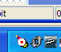
Note the change in the icon’s status. The icon can be removed from the taskbar:

Tomcat was installed in the folder chosen by the user, which we will now refer to as <tomcat>. The directory structure for the downloaded Tomcat 5.5.17 version is as follows:
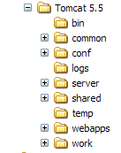
The Tomcat installation has added a number of shortcuts to the [Start] menu. We use the [Monitor] link below to launch the Tomcat stop/start tool:

We then see the icon shown earlier:
The Tomcat monitor can be launched by double-clicking this icon:

The [Start - Stop - Pause] - Restart buttons allow us to start, stop, and restart the server. We start the server by clicking [Start], then, using a browser, we enter the URL http://localhost:8080. We should see a page similar to the following:

You can follow the links below to verify that Tomcat has been installed correctly:

All the links on the [http://localhost:8080] page are worth exploring, and the reader is encouraged to do so. We will have the opportunity to revisit the links used to manage web applications deployed on the server:

2.3. Deploying a web application on the Tomcat server
Reading [ref1]: Chapter 1, Chapter 2: 2.3.1, 2.3.2, 2.3.3
2.3.1. Deployment
A web application must follow certain rules to be deployed within a servlet container. Let <webapp> be the directory of a web application. A web application consists of:
in the <webapp>\WEB-INF\classes folder | |
in the <webapp>\WEB-INF\lib folder | |
in the <webapp> folder or subfolders |
The web application is configured via an XML file: <webapp>\WEB-INF\web.xml.
Let’s build the web application with the following directory structure:

We will create the directory structure above using Windows Explorer. The [classes] and [lib] folders are empty here. The [views] folder contains a static HTML file:

whose content is as follows:
<html>
<head>
<title>Example Application</title>
</head>
<body>
Sample application running....
</body>
</html>
If you load this file in a browser, you get the following page:

The URL displayed by the browser shows that the page was not served by a web server but loaded directly by the browser. We now want it to be available via the Tomcat web server.
Let’s return to the <tomcat> directory tree:
Web applications deployed on the Tomcat server are configured using XML files located in the [<tomcat>\conf\Catalina\localhost] folder:
 |  |
These XML files can be created manually because their structure is simple. Rather than taking this approach, we will use the web tools provided by Tomcat.
2.3.2. Tomcat Administration
On its login page http://localhost:8080, the server provides links for administration:

The [Tomcat Administration] link allows us to configure the resources that Tomcat makes available to the web applications deployed within it, such as a database connection pool. Let’s follow the link:

The page that appears indicates that administering Tomcat 5.x requires a specific package called "admin." Let’s return to the Tomcat website:

Let’s download the zip file labeled [Web Application Administration] and then unzip it. Its contents are as follows:

The [admin] folder must be copied to [<tomcat>\server\webapps], where <tomcat> is the folder where Tomcat 5.x was installed:

The [localhost] folder contains an [admin.xml] file that must be copied to [<tomcat>\conf\Catalina\localhost]:

Stop and then restart Tomcat if it was running. Then, using a browser, request the web server’s login page again:

Follow the [Tomcat Administration] link. You will see a login page:
Note: In fact, to get the page below, I first had to manually enter the URL [http://localhost:8080/admin/index.jsp]. Only then did the [Tomcat Administration] link above work. I’m not sure if this was a procedural error on my part.
 |  |
Here, you must re-enter the information you provided during the Tomcat installation. In our case, we enter the username and password as admin / admin. The [Login] button takes us to the following page:

This page allows the Tomcat administrator to define
- data sources,
- the information needed to send email (Mail Sessions),
- environment data accessible to all applications (Environment Entries),
- manage Tomcat users and administrators (Users),
- manage user groups (Groups),
- define roles (= what a user can and cannot do),
- define the characteristics of web applications deployed by the server (Catalina Service)
Follow the [Roles] link above:

A role allows you to define what a user or group of users can or cannot do. Certain rights are associated with a role. Each user is associated with one or more roles and has the rights associated with them. The [manager] role below grants the right to manage web applications deployed in Tomcat (deployment, startup, shutdown, unloading). We will create a [manager] user and associate them with the [manager] role to allow them to manage Tomcat applications. To do this, we follow the [Users] link on the administration page:

We see that a number of users already exist. We use the [Create New User] option to create a new user:

We give the user manager the password manager and assign the manager role to them. We use the [Save] button to confirm this addition. The new user appears in the list of users:
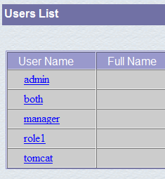
This new user will be added to the file [<tomcat>\conf\tomcat-users.xml]:

whose content is as follows:
- line 10: the [manager] user that was created
Another way to add users is to edit this file directly. This is the procedure to follow if, for example, you have forgotten the password for the admin or manager account.
2.3.3. Managing Deployed Web Applications
Now let’s return to the login page [http://localhost:8080] and follow the [Tomcat Manager] link:

This brings up an authentication page. We log in as manager / manager, i.e., the user with the [manager] role that we just created. In fact, only a user with this role can use this link. In line 11 of [tomcat-users.xml], we see that the user [admin] also has the [manager] role. We could therefore also use the [admin / admin] credentials.

We are taken to a page listing the applications currently deployed in Tomcat:

We can add a new application using the forms at the bottom of the page:

Here, we want to deploy the sample application we built earlier within Tomcat. We do this as follows:

/example | the name used to identify the web application to be deployed | |
C:\data\2005-2006\eclipse\dvp-eclipse-tomcat\example | the web application folder |
To retrieve the file [C:\data\2005-2006\eclipse\dvp-eclipse-tomcat\example\views\example.html], we will request the URL [http://localhost:8080/exemple/vues/exemple.html] from Tomcat. The context is therefore used to name the root of the deployed web application’s directory tree. We use the [Deploy] button to deploy the application. If everything goes well, we get the following response page:

and the new application appears in the list of deployed applications:

Let’s comment out the /example context line above:
link to http://localhost:8080/exemple | |
allows you to start the application | |
allows you to stop the application | |
allows you to reload the application. This is necessary, for example, when you have added, modified, or deleted certain classes in the application. | |
removes the [/example] context. The application disappears from the list of available applications. |
Now that our /example application is deployed, we can run some tests. We request the [example.html] page via the URL [http://localhost:8080/exemple/vues/exemple.html]:

Another way to deploy a web application on the Tomcat server is to provide the information we entered via the web interface in a [context].xml file located in the [<tomcat>\conf\Catalina\localhost] folder, where [context] is the name of the web application.
Let’s return to the Tomcat administration interface:

Let’s remove the [/example] application using its [Undeploy] link:

The [/example] application is no longer part of the list of active applications. Now let’s define the following [example.xml] file:
The XML file consists of a single <Context> tag whose docBase attribute defines the folder containing the web application to be deployed. Let’s place this file in <tomcat>\conf\Catalina\localhost:

Stop and restart Tomcat if necessary, then view the list of active applications using the Tomcat administrator:
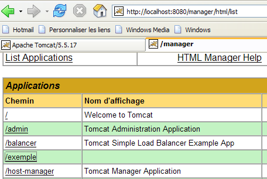
The [/example] application is indeed present. Let’s request the URL in a browser:
[http://localhost:8080/exemple/vues/exemple.html]:
A web application deployed in this way can be removed from the list of deployed applications, in the same way as before, using the [Undeploy] link:

In this case, the [example.xml] file is automatically removed from the [<tomcat>\conf\Catalina\localhost] folder.
Finally, to deploy a web application within Tomcat, you can also define its context in the [<tomcat>\conf\server.xml] file. We will not cover this point here.
2.3.4. Web application with a home page
When we request the URL [http://localhost:8080/exemple/], we get the following response:

This behavior depends on Tomcat's configuration. In previous versions, we would have seen the contents of the application's physical directory [/example]. It's a good thing that Tomcat now prevents this by default.
We can configure the system so that, when the context is requested, a so-called home page is displayed. To do this, we create a [web.xml] file and place it in the <example>\WEB-INF folder, where <example> is the physical folder of the web application [/example]. This file is as follows:
- Lines 2–5: The root <web-app> tag with attributes copied and pasted from the [web.xml] file of the Tomcat [/admin] application (<tomcat>/server/webapps/admin/WEB-INF/web.xml).
- line 7: the display name of the web application. This is a freely chosen name with fewer constraints than the application context name. For example, it can contain spaces, which is not possible with the context name. This name is displayed, for example, by the Tomcat administrator:

- Line 8: Description of the web application. This text can then be retrieved programmatically.
- Lines 9–11: The list of welcome files. The <welcome-file-list> tag is used to define the list of views to be presented when a client requests the application context. There can be multiple views. The first one found is presented to the client. Here we have only one: [/views/example.html]. Thus, when a client requests the URL [/example], it will actually be the URL [/example/views/example.html] that is served to them.
Let’s save this [web.xml] file in <example>\WEB-INF:

If Tomcat is still running, you can force it to reload the [/example] web application using the [Reload] link:

During this "reload" operation, Tomcat re-reads the [web.xml] file contained in [<example>\WEB-INF] if it exists. This will be the case here. If Tomcat was stopped, restart it.
Using a browser, request the URL [http://localhost:8080/exemple/]:
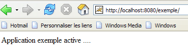
The host file mechanism has worked.
2.4. Installing Eclipse
Eclipse is a multi-language development environment. It is widely used in Java development. It is an extensible tool through the addition of tools called plugins. There are a large number of plugins, and this is what makes Eclipse so powerful.
Eclipse is available at the URL [http://www.eclipse.org/downloads/]:

We want to use Eclipse for Java web development. There are a number of plugins available for this purpose. They help validate the syntax of JSP pages, XML files, etc., and allow you to test a web application within Eclipse. We will use one of these plugins, called the Web Tools Package (WTP). The standard procedure for installing Eclipse is as follows:
- Install Eclipse
- install the plugins you need
The WTP plugin itself requires other plugins, which makes its installation quite complex. Therefore, the Eclipse website offers a package that includes the Eclipse development platform and the WTP plugin along with all the other plugins it requires. This package is available on the Eclipse website (May 2006) at the URL [http://download.eclipse.org/webtools/downloads/]:

Follow the link [1.0.2] above:
We download the [wtp] package using the link above. The resulting zip file contains the following:


Simply extract this content into a folder. We will refer to this folder as <eclipse> from now on. Its contents are as follows:

[eclipse.exe] is the executable file and [eclipse.ini] is its configuration file. Let’s look at the contents of the latter:
These arguments are used when launching Eclipse as follows:
You can achieve the same result as with the .ini file by creating a shortcut that launches Eclipse with these same arguments. Let’s explain them:
- -vmargs: indicates that the following arguments are intended for the Java Virtual Machine that will run Eclipse. Indeed, Eclipse is a Java application.
- -Xms40m: ?
- -Xmx256m: sets the memory size in MB allocated to the Java Virtual Machine (JVM) running Eclipse. By default, this size is 256 MB, as shown here. If the system allows it, 512 MB is preferable.
These arguments are passed to the JVM that will run Eclipse. The JVM is represented by a [java.exe] or [javaw.exe] file. How is this file located? In fact, it is located in several ways:
- in the OS PATH
- in the <JAVA_HOME>/jre/bin folder, where JAVA_HOME is a system variable defining the root folder of a JDK.
- at a location passed as an argument to Eclipse in the form -vm <path>\javaw.exe
This last solution is preferable because the other two are subject to the vagaries of subsequent application installations, which can either change the OS PATH or change the JAVA_HOME variable.
We therefore create the following shortcut:

<eclipse>\eclipse.exe -vm "C:\Program Files\Java\jre1.5.0_06\bin\javaw.exe" -vmargs -Xms40m -Xmx512m | |
Eclipse installation directory |
Once that’s done, launch Eclipse using this shortcut. You’ll see an initial dialog box:
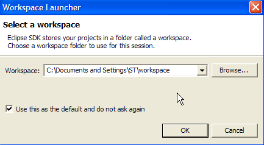
A [workspace] is a workspace. Let’s accept the default values provided. By default, Eclipse projects will be created in the <workspace> folder specified in this dialog box. There is a way to override this behavior. This is what we will do systematically. Therefore, the response given in this dialog box is not important.
Once this step is complete, the Eclipse development environment is displayed:

We close the [Welcome] view as suggested above:

Before creating a Java project, we will configure Eclipse to specify the JDK to use for compiling Java projects. To do this, we select the [Window / Preferences / Java / Installed JREs] option:

Normally, the JRE (Java Runtime Environment) used to launch Eclipse itself should be present in the list of JREs. This will usually be the only one. You can add JREs using the [Add] button. You must then specify the root directory of the JRE. The [Search] button will launch a search for JREs on the disk. This is a good way to keep track of the JREs you install and then forget to uninstall when upgrading to a newer version. Above, the checked JRE is the one that will be used to compile and run Java projects.
The JRE used in our examples is the one installed in Section 2.1, which was also used to launch Eclipse. Double-clicking it opens its properties:

Now, let’s create a Java project [File / New / Project]:
 |  |
Select [Java Project], then [Next] ->
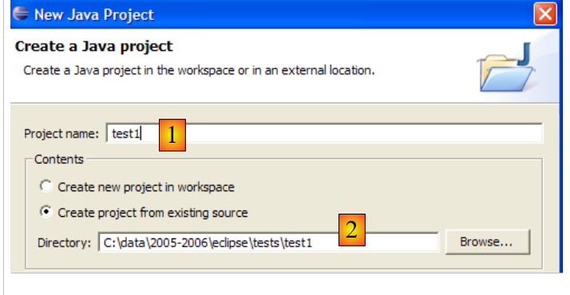
In [2], we specify an empty folder where the Java project will be installed. In [1], we give the project a name. It does not have to be named after its folder, as the example above might suggest. Once this is done, we use the [Finish] button to complete the creation wizard. This amounts to accepting the default values proposed by the following pages of the wizard.
We now have a Java project skeleton:

Right-click on the [test1] project to create a Java class:


- in [1], the folder where the class will be created. By default, Eclipse suggests the current project folder.
- in [2], the package in which the class will be placed
- in [3], the name of the class
- In [4], we request that the static method [main] be generated
We confirm the wizard by clicking [Finish]. The project is then enhanced with a class:
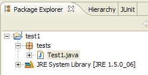
Eclipse has generated the class skeleton. This can be accessed by double-clicking on [Test1.java] above:

We modify the code above as follows:

We run the [Test1.java] program: [right-click on Test1.java -> Run As -> Java Application]

The result of the execution is displayed in the [Console] window:

2.5. Tomcat - Eclipse Integration
To work with Tomcat while remaining within Eclipse, we need to declare this server in the Eclipse configuration. To do this, we select the [File / New / Other] option. We then see the following wizard:
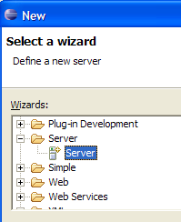
We choose to create a new server. We select the [Server] icon above and then click [Next]:
Adding the server results in a folder appearing in the Eclipse Project Explorer:
To manage Tomcat from Eclipse, we display the view called [Servers] using the option [Window -> Show View -> Other -> Server]:


Click [OK]. The [Servers] view will then appear:

All registered servers appear in this view, in this case the Tomcat 5.5 server we just registered. Right-clicking on it gives access to the commands to start, stop, and restart the server:

Above, we are starting the server. When it starts, a number of logs are written to the [Console] view:
Understanding these logs takes some getting used to. We won’t dwell on them for now. However, it is important to verify that they do not indicate any context loading errors. Indeed, when launched, the Tomcat/Eclipse server attempts to load the context of the applications it manages. Loading an application’s context involves processing its [web.xml] file and loading one or more classes that initialize it. Several types of errors can occur:
- the [web.xml] file has a syntax error. This is the most common error. It is recommended to use a tool capable of validating an XML document during its creation.
- certain classes to be loaded were not found. They are searched for in [WEB-INF/classes] and [WEB-INF/lib]. You should generally verify the presence of the necessary classes and the spelling of those declared in the [web.xml] file.
The server launched from Eclipse does not have the same configuration as the one installed in section 2.2, page 5. To verify this, access the URL [http://localhost:8080] using a browser:
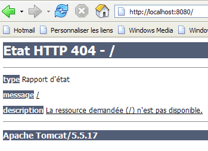
This response does not indicate that the server is not working, but rather that the resource / requested is not available. With the Tomcat server integrated into Eclipse, these resources will be web projects. We will see this later. For now, let’s stop Tomcat:

The previous operating mode can be changed. Let’s return to the [Servers] view and double-click on the Tomcat server to access its properties:
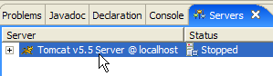 |  |
Checkbox [1] is responsible for the behavior described above. When checked, web applications developed in Eclipse are not declared in the configuration files of the associated Tomcat server but in separate configuration files. As a result, the default applications within the Tomcat server—[admin] and [manager], which are two useful applications—are not available. So, let’s uncheck [1] and restart Tomcat:
 |  |
Once this is done, let’s request the URL [http://localhost:8080] using a browser:

We see the behavior described in section 2.3.3, page 15.
In our previous examples, we used a browser outside of Eclipse. You can also use a browser within Eclipse:

Above, we select the internal browser. To launch it from Eclipse, you can use the following icon:

The browser that actually launches will be the one selected via the [Window -> Web Browser] option. Here, we get the internal browser:
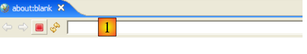
If necessary, launch Tomcat from Eclipse and enter the URL [http://localhost:8080] in [1]:

Follow the [Tomcat Manager] link:

You will be prompted for the [username/password] required to access the [manager] application. Based on the Tomcat configuration we set up earlier, you can enter [admin/admin] or [manager/manager]. You will then see a list of deployed applications:

We see the [person] application that we created. The associated [Reload] link will be useful later.